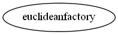

Master index
Index for manopt\manifolds\euclidean
Dependency Graph for manopt\manifolds\euclidean

Generated on Thu 02-Jan-2014 18:07:53 by
m2html
© 2005
 Master index
Master index Master index
Master index